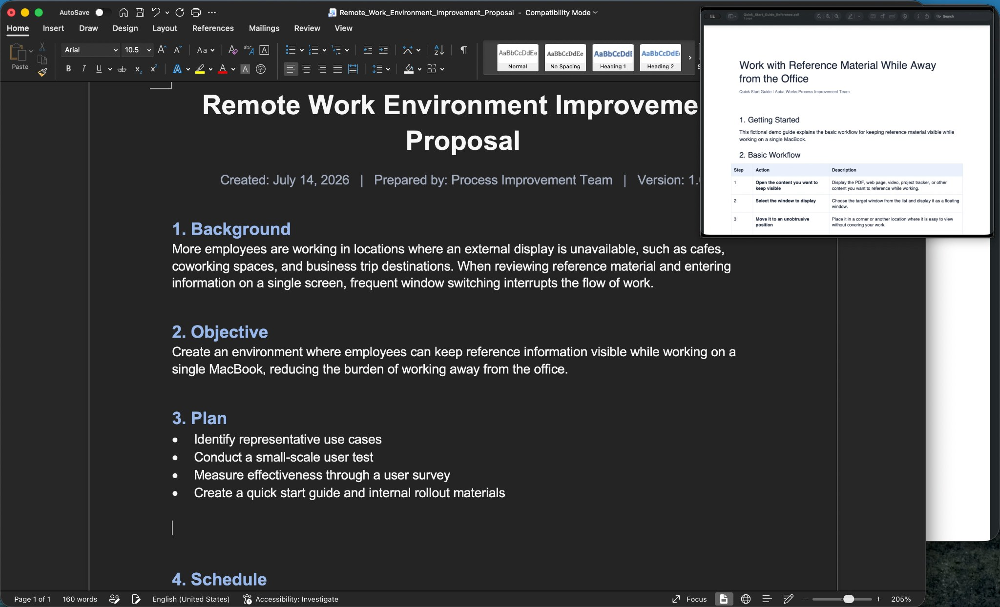

Switch back and forth
Every check requires another window switch, interrupting your focus
Keep the window you need visible while you work
At a café, in the office, or on a business trip
Keep using it for freeUnlimited sessions of up to 10 minutesNo expirationNo registration

Working on one screen creates more friction than it seems
Open the reference, return to your work, lose your place, and open it again. Without an external display, this small loop happens repeatedly
Every check requires another window switch, interrupting your focus
Read the reference and keep writing without switching back and forth
Keep the same workflow wherever you work
At cafés, libraries, coworking spaces, hot-desking offices, and business-trip destinations, keep reference and work visible on one limited screen
At a café
Create emails or documents while viewing a PDF or webpage
In the office
Keep procedures or tasks visible while entering and updating information
On a business trip
Pin a timer, progress view, chat, or any window you need to monitor
Actual workflow
Turn the window you need into a floating view above your workspace and adjust its size and position freely
Start free with your everyday workflow
Use unlimited sessions of up to 10 minutes with no expiration. Keep using it in real work, then unlock unlimited session length only when you need it
Free
Keep using it with no expiration
Unlimited
When you need longer sessions
FAQ
Detailed instructions and troubleshooting are available on the Toybird Labs support page
View support →Supported Mac windows such as browsers, documents, PDFs, videos, and dashboards can be displayed as a floating window
No. The selected window is displayed locally on your Mac and is not sent to Toybird Labs servers or external AI services
The free version provides unlimited sessions of up to 10 minutes with no expiration. A one-time $9.99 purchase removes the time limit
Pocket Screen supports macOS 14 or later on both Apple silicon and Intel Macs
The next time you work away from your desk
Use it free for unlimited 10-minute sessions, then remove the limit with a one-time purchase when you need longer sessions